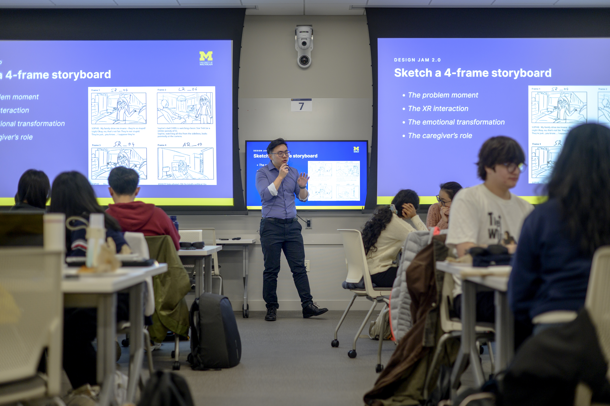

Launch Your Engaged Learning Journey
Transform your academic knowledge into real-world impact. Use this guide to understand your project context, evaluate team readiness, establish expectations, and begin a productive partnership.

Why the Work Starts Before the Project
Engaged learning is different from a traditional classroom assignment. Students work with real partners, real constraints, and real communities. Preparation helps teams enter the experience with humility, curiosity, and a shared plan.
Before creating a solution, students should learn about the project context, reflect on their assumptions, identify what their team already knows, and decide what they still need to learn.
Preparation Goals
- Develop social and community awareness: Examine identity, positionality, assumptions, and power before entering community contexts.
- Understand expectations: Review program requirements, project commitments, deadlines, and expected outcomes before beginning the work.
- Assess team readiness: Identify each team member's skills, interests, availability, responsibilities, and learning goals.
- Begin project scoping: Learn about the organization's needs, intended users, constraints, and desired outcomes before committing to a solution.
Questions to Consider
- What do I hope to learn from this experience?
- Who will be affected by the project and its outcomes?
- What assumptions am I making about the partner, community, or project?
- What knowledge and skills does my team already have?
- How will the partner participate in project decisions?
Featured Preparation Resources
- Social Identity Snapshot: A tool to reflect on self-awareness and positionality before entering community contexts.
- Check Yourself Community Engagement Checklist: A quick audit for personal assumptions and ethical readiness.
- Project Management Worksheet: Guidance on clarifying project scope, team roles, and timeline.